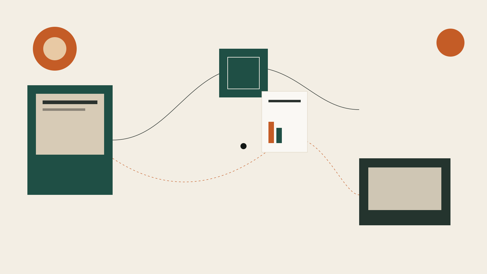

Consulenza operativa
Modello, pricing, go-to-market, pitch, numeri.
Per startup
Consulenza, mentor, bandi, capitali, spazio, community. Entri nel punto in cui sei.

Il modo di lavorare
Modello, pricing, go-to-market, pitch, numeri.
Founder e professionisti che hanno già costruito.
Voucher Startup, Insight, Smart&Start. Prima se ha senso, poi la domanda.
Investiamo se c’è fit. Altrimenti angel e VC.
Commercialisti, avvocati, marketer, developer. Il parere giusto prima della parcella.
Incubazione, Sardegna Ricerche, primo investitore da noi, poi angel e VC. Round in chiusura da 4 milioni.
“TNV ci ha aiutato nei passaggi in cui una startup rischia di perdere tempo.” Silvio Piredda